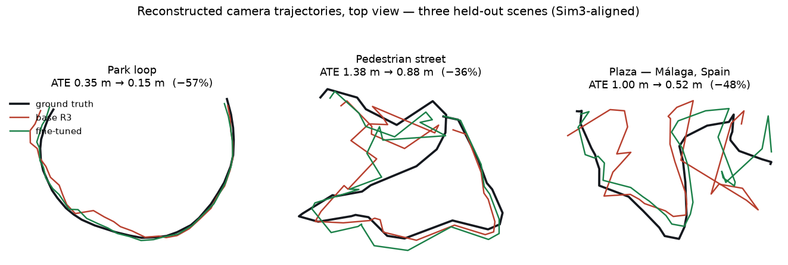
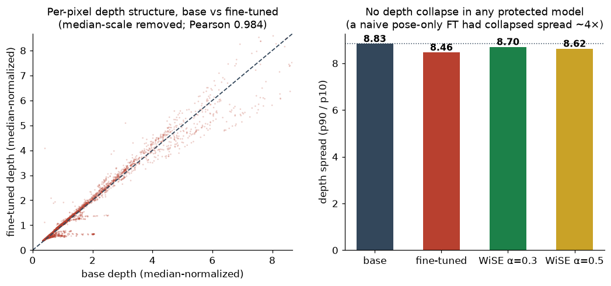
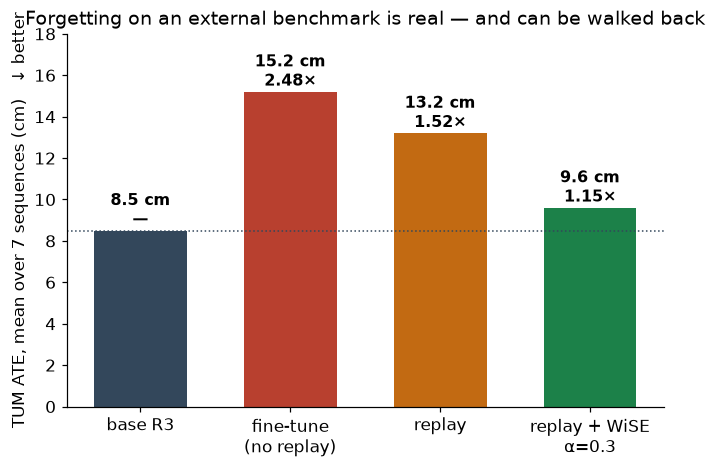
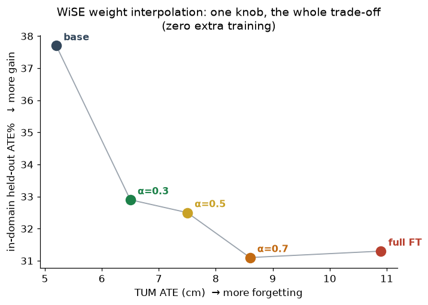
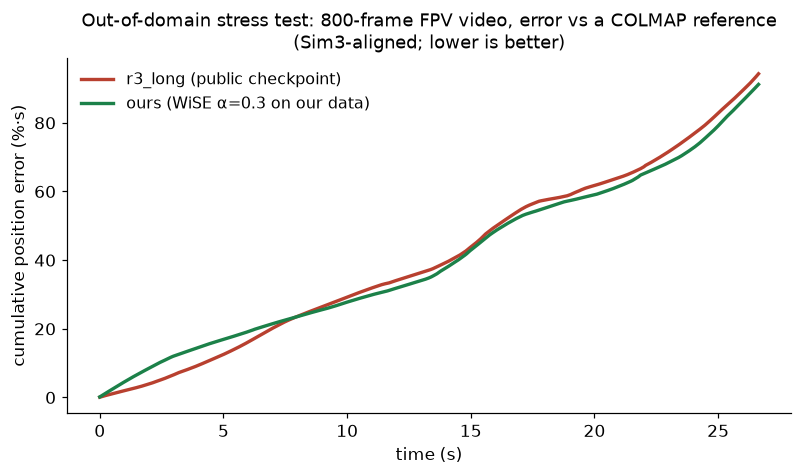
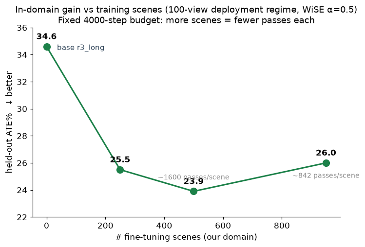
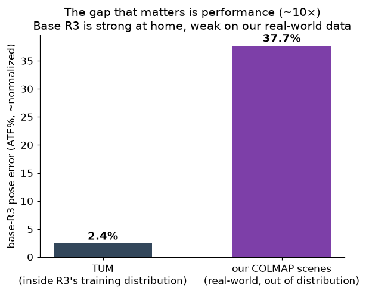

Research note · pose & depth estimation
Can 1,000 Open Scenes Make a State-of-the-Art 3D Model Better?
We fine-tuned R3, a state-of-the-art streaming 3D reconstruction model, on roughly one thousand of our COLMAP scenes. The short answer is yes — measurably, reproducibly, and on the checkpoint people actually deploy. The longer answer is the work around it: what breaks when you push a foundation model onto new data (depth, external benchmarks), how we walked every regression back, and where we ended up with a model that beats the public checkpoint on its own turf.
01The question
If we own data a model has never seen, what is it worth?
This is a practical question before it is an academic one. We own about a thousand outdoor and indoor scenes reconstructed with COLMAP, with metric camera poses from phone AR tracking. R3 is a relative-pose regression model built on a Depth Anything 3 / DINOv2 backbone, trained on a large mix of public datasets that does not include ours. We wanted to know whether further training on our scenes makes it better, and at what cost — because the same playbook applies to any foundation model you want to specialize on proprietary data.
Three numbers hold the story together; the rest of the note reconstructs them one at a time.
02The gain
On our domain, pose accuracy improves — visibly
Our first study used the «short» variant (windows of up to 32 views). We evaluate on 50 scenes held out of training entirely, measuring trajectory error (ATE) normalized by window extent. The base model starts at 37.7%; after fine-tuning we land around 32%, with rotation error dropping from 5.0° to 3.7°. Three independent runs converge to the same numbers, so this is not one lucky checkpoint.
The most direct way to see it is to overlay the camera trajectory the model reconstructs onto ground truth. Where the base model drifts, the adapted one stays on the path.

The same thing, explorable in 3D. What R3 outputs — and what fine-tuning improves — are camera poses: below you can inspect them directly. The reconstructed trajectory (ground truth, base, fine-tuned, Sim3-aligned) with a sparse context cloud. Drag to rotate, scroll to zoom; the buttons toggle each trajectory.
One clarification on method: we show poses, not a dense fused surface. R3's per-frame depth is good, but its scale is not perfectly consistent across frames, and fusing all depths into a single surface fragments on our outdoor scenes. Pose is what we measure, what fine-tuning improves, and exactly what this view shows.
Online reconstruction, frame by frame
In the style of R3's own demo: on the left the input stream and the rendered flythrough — the point cloud accumulating frame by frame, filmed by an external camera travelling above the reconstruction (rendered offline, as R3's project page does; predicted depth as an inset top-right, trajectory colored blue→red over time); on the right the reference point cloud, the full COLMAP reconstruction of the area — static, mouse-explorable, with the trajectory and current position. We compare our fine-tuned model against the R3 base; below, cumulative position error grows in real time.
03A risk we had to defuse
Pose-only fine-tuning tends to collapse depth
R3 does not only predict pose: from the same shared backbone it also estimates a per-frame depth map. This is where our first attempt went wrong. A pose-oriented fine-tune, at a learning rate high enough to actually move the pose metrics, drags the backbone with it — and the depth head, reading those same features, came out flattened. Depth spread had collapsed roughly four-fold, and point clouds were flat and unusable.
The fix that held is structural, not a learning-rate compromise: during training we distill depth from a frozen metric DA3 teacher and keep the depth head frozen [1,8]. The teacher acts as an anchor, forcing the shared features to stay compatible with the original depth while pose specializes. Depth structure stays glued to the base at every checkpoint.

04The cost
Features drift, and external benchmarks feel it
The most insidious cost is forgetting. As we improve on our domain, the shared representations move away from the distributions R3 was trained on, and performance there degrades. We measure it on TUM-RGBD [7], a classic odometry benchmark with motion-capture ground truth — close in flavor to R3's training data, and therefore a good proxy for how much the model has forgotten its home world.
A naive fine-tune degrades TUM pose error by 2.48× on average. It is not a bug and not an artifact: as we show below, the degradation is perfectly gradual as you move away from the base weights. So the question becomes operational — can we keep the in-domain gain without paying this price?
05Countermeasures
Four families of remedies, one measuring stick
The catastrophic-forgetting literature offers four broad families — parameter-efficient methods, replay of original-style data, functional distillation, and weight merging [8,9,10,11,12] — and we went through them one by one, on the same protocol so they can be compared.
| Approach | Idea | Outcome |
|---|---|---|
| LoRA (rank 32) [9] | low-rank adapters, base weights frozen | weakest in-domain gain and, surprisingly, the worst on TUM — rejected |
| Replay, 12→97 ARKit scenes [11] | «rehearsal» of indoor data mixed into the fine-tune | cuts roughly 40% of the excess forgetting; 12 scenes ≈ 97 scenes — helps |
| LwF — pose self-distillation [8] | distill the base model's own pose predictions on the replay stream, no ground truth needed | best in-domain rotation of the whole study (3.48°), but does not beat plain replay on TUM — neutral |
| WiSE-FT — weight interpolation [10] | weighted average base ↔ fine-tuned, after training | the winning lever: one coefficient dials the trade-off — wins |
Two of these deserve a remark. LoRA was the «obvious» candidate: freezing the base weights and learning small adapters should forget less; in practice it did worst of all, a sign that forgetting here depends more on how aggressively you update than on how many parameters you touch. LwF was the most elegant idea — anchoring the model to its own original behavior without any ground truth — and it delivered the best in-domain rotation of the study, but on forgetting it did not beat plain replay.
No single training-time lever cancels forgetting, but the levers stack. Replay — and remarkably little of it; a dozen rehearsal scenes anchor as well as a hundred — brings forgetting from 2.48× down to 1.52×. Weight interpolation applied on top brings it to 1.15×.

| Model | TUM ATE (cm) | vs base | in-domain ATE% |
|---|---|---|---|
| base R3 | 8.5 | — | 37.7 |
| fine-tune 950 (no replay) | 15.2 | 2.48× | ~32 |
| replay (950 + ARKit anchor) | 13.2 | 1.52× | ~32 |
| replay + WiSE α=0.3 | 9.6 | 1.15× | ~33 |
06The winning lever
WiSE: one knob on the trade-off, at almost zero cost
The strategy that moves the needle most is also the cheapest. WiSE-FT [10] does not touch training at all: it takes the already-adapted model and linearly interpolates its weights with the base. A single coefficient α decides where to stop — α=0 is the base, α=1 the full fine-tune — and every value in between is a different trade-off. It costs a minute of CPU and hands you the entire frontier between gain and forgetting.

The shape of the curve — a smooth ramp, not a cliff — tells us something about the problem. If R3 had somehow «memorized» its benchmarks, the smallest step away from the base weights would crater them; instead they degrade gradually and predictably. That is ordinary representation drift, not benchmark overfitting — and precisely because of that, it is controllable.
07From study to deployment
Repeating everything on the long model — and beating the public checkpoint on its own turf
Everything so far used the short variant. But the checkpoint people actually deploy for video is r3_long (32–100 view windows, the default of R3's long/streaming modes). So we re-ran the whole recipe there: same data, same protections, initialized from r3_long, evaluated at 100 views — and derived WiSE interpolations against r3_long itself, so that every point on the dial is a drop-in replacement for the deployed model.
| Model (100-view eval) | in-domain ATE% mean | median | TUM, 10 seq (cm) |
|---|---|---|---|
| r3_long — deployed public checkpoint | 34.6 | 27.5 | 5.94 |
| r3 short (for reference) | 29.0 | 26.5 | 6.64 |
| ours, full fine-tune | 26.5 | 22.1 | 8.17 (1.38×) |
| ours, WiSE α=0.3 | 27.0 | 21.1 | 6.31 (+6%) |
| ours, WiSE α=0.5 | 26.0 | 21.1 | 6.70 (+13%) |
In-domain, our models cut the deployed checkpoint's error by a quarter (34.6→26.0 mean, 27.5→21.1 median) and even beat the stronger short baseline. On TUM the α=0.3 interpolation gives back only 6% — and stays better than the public short model.
Then we stress-tested where fine-tunes usually embarrass themselves: a fast 800-frame FPV video, completely unrelated to our data, reconstructed in R3's streaming mode. To score it honestly we built an independent reference with COLMAP (all 800 frames registered, 0.66 px mean reprojection error) and measured every model's trajectory against it after Sim3 alignment.

Two honest footnotes. First, α still matters out of domain: the α=0.5 point, best in-domain, pays a real price on this video (5.59% mean error) — the dial is a dial, not magic; we recommend α=0.3 as the default operating point and α=0.5 when the workload matches our domain. Second, our first WiSE merges for the long model were built against the wrong base (the fine-tune's init was the short model), and their out-of-domain behavior collapsed — re-running the fine-tune initialized from r3_long fixed it. Weight interpolation only works along the actual training trajectory; the base you interpolate with must be the base you trained from.
08How much data does it take?
The scaling picture
In the initial 32-view study, most of the measured gain arrived with the first ~250 scenes, with a slower improvement up to 950 — and per-scene analysis shows the lift is broad rather than scene-specific: the fine-tune shifts a general prior (wide-baseline calibration on real-world captures) rather than memorizing places. We are re-measuring the curve in the deployment (100-view) regime; this section will be updated with those results.

Where the remaining error lives is just as informative: auditing all 50 held-out scenes, the reconstructions our models still fail on are the classic hard cases — dense vegetation, large symmetric structures, repetitive interiors — and captures whose photo ordering hops around the scene, which is structurally hostile to any online, causally-attending model. Fixing that tail is not a matter of more of the same data; it points at targeted data diversity and at sequence-aware training windows, both of which are actionable.
09Why our data matters
The gap is one of performance, not appearance
We were tempted to tell ourselves that our data is visually alien to R3's world. We checked, by measuring domain distances in the backbone's feature space, and the verdict is that the appearance distance is modest: our data, ARKitScenes and TUM form nearly an equilateral triangle, with TUM only 1.26× closer to R3's training mix than our scenes are. The 2-D projection suggested a cleaner separation than actually exists. That is not the argument.
The solid argument is about the task: base R3 is roughly ten times worse on our real-world scenes than on its benchmarks. Reported performance reflects the training distribution; taken to real captures, the model is much weaker. That performance gap is exactly the space our data fills.

Methods note
Protocol. Predicted poses are compared to ground truth after Sim3 alignment (orientation-based rotation estimate, then scale and translation from camera centers [13]). In-domain: 50 scenes held out of training (ATE% of window extent), identical held-out set for every model and every scaling point. External: TUM-RGBD sequences (ATE RMSE, motion-capture ground truth) — 7 sequences in the initial study, 10 in the deployment study. The FPV test uses an independent COLMAP reconstruction as reference (800/800 frames registered, 0.66 px mean reprojection). Depth is evaluated against the base model after per-frame median-scale normalization, because the distillation objective is deliberately scale-invariant.
Data rigor. A dataset we downloaded for replay contained scenes with corrupted tracking (pose jumps of up to five meters between frames): a geometric audit — depth↔pose reprojection consistency, timestamp monotonicity, a physical jump threshold — quarantined them before training. TUM error must be measured on many sequences: per-sequence variance is high (0.9×–2.6× for the same model), and one or three sequences give misleading pictures. We also audited the ground truth of our own held-out set: reconstruction quality metrics (registration, reprojection error) are healthy across all 50 scenes, but 21 of them contain capture patterns (weak covisibility between consecutive photos, position jumps) that are hostile to online models specifically — those scenes carry error no fine-tune can remove, and we report them as part of the benchmark rather than excluding them.
Limits. The in-domain ATE% and TUM ATE use different normalizations, so the «roughly ten times» in section 09 is directional. Model self-confidence is not a substitute for measurement: in one intermediate experiment, pose confidence overstated a model's quality on out-of-domain footage, which is why the FPV test is scored against an external COLMAP reference. The complete solution to forgetting remains retraining on the original multi-dataset mix, which only the model's authors can do; here we demonstrate the direction and a practical mitigation. Every number in this note comes from real pipeline runs.
10Conclusions
What we take away
Fine-tuning on our data works, reproducibly, on both released variants of the model — and on the deployment checkpoint it is not a trade-off but a strict upgrade at the right operating point: a quarter less trajectory error on our domain, a measured edge even on out-of-domain footage, and external benchmarks within a few percent of the base. Depth is preserved by construction, distilled from a frozen teacher. Forgetting is real but governable in steps: a little replay during training, weight interpolation after it, and — crucially — interpolating against the exact base the fine-tune started from.
The practical consequence: the value of proprietary data is measured where the gap is real — on real-world performance. Our thousand scenes moved a state-of-the-art model by a quarter on that axis, at essentially zero cost elsewhere, using one GPU and a recipe that transfers to any foundation model with the same shape: protect the heads you do not train, rehearse a little, and keep the dial in your hand.
—References
- R3 — 3D Reconstruction via Relative Regression. The base model under study (relative-pose regression, DA3 backbone).
- Depth Anything 3. Backbone and frozen metric-depth teacher used for distillation.
- Oquab et al. DINOv2: Learning Robust Visual Features without Supervision. 2023.
- Schönberger & Frahm. Structure-from-Motion Revisited (COLMAP). CVPR 2016.
- Apple. ARKit — visual-inertial odometry providing the metric reference poses of our scenes.
- Baruch et al. ARKitScenes. NeurIPS Datasets & Benchmarks 2021 — indoor replay anchor.
- Sturm et al. A Benchmark for RGB-D SLAM Evaluation (TUM-RGBD). IROS 2012.
- Li & Hoiem. Learning without Forgetting. ECCV 2016 / TPAMI 2017 — functional distillation; conceptual basis of our pose self-distillation.
- Hu et al. LoRA: Low-Rank Adaptation of Large Language Models. ICLR 2022.
- Wortsman et al. Robust Fine-Tuning of Zero-Shot Models (WiSE-FT). CVPR 2022.
- Ibrahim et al. Simple and Scalable Strategies to Continually Pre-train LLMs. 2024 — small-fraction replay suffices to mitigate forgetting.
- Yadav et al. TIES-Merging / Wortsman et al. Model Soups — context on weight merging.
- Umeyama. Least-squares estimation of transformation parameters. TPAMI 1991 — alignment used for ATE (rotation from orientations, scale/translation from centers).